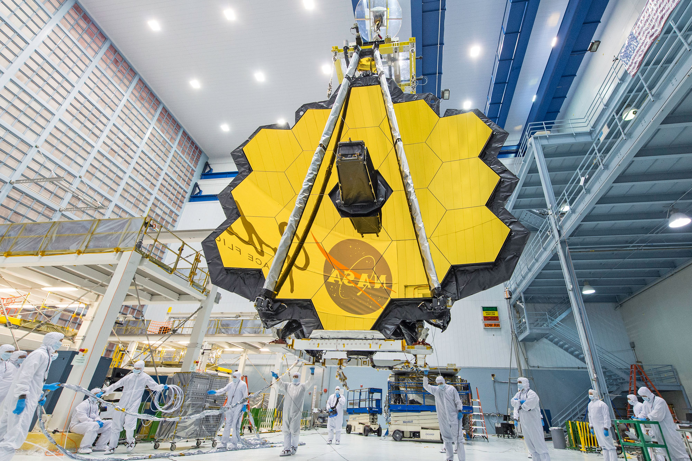

Space X is a company that makes a lot of Technology for space exploration.
The linked webpage shows the first orbital reusbale rocket called the falcon nine which is very important in progression because it allows to reduce costs of space exploration and allows us to progress further.
This website also showed models of the rocket, and what each part does.
There are also rockets and inventions on this website but Falcon 9 is the most notable.
The James Web Telesecope was an improvment over the Hubble Telescope because it orbits much faster than it.
The James Web Telescope helps us look back 13.5 billion years ago to see the earliest galaxies in the universe.
The telescope also folds up to fit into a rocket which allows it to be launched into space. This helps us learn mor about how to send largr objects into space because we can't have anything too large or too heavy. So this gave us more experience.
It also has SPF protection of 1 million, so it can survive the sun's, Earth's, and moon's radiation
